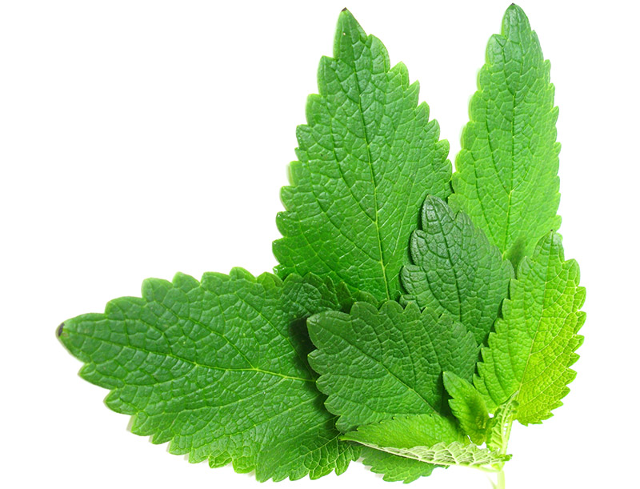

This article comes from Wikipedia. Read the full document.
The lemon (Citrus × limon) is a small evergreen tree native to Asia. The tree's ellipsoidal yellow fruit is used for culinary and non-culinary purposes throughout the world, primarily for its juice, though the pulp and rind (zest) are also used in cooking and baking.
The juice of the lemon is about 5% to 6% citric acid, which gives lemons a sour taste. The distinctive sour taste of lemon juice makes it a key ingredient in drinks and foods such as lemonade.
The average lemon contains about 3 tablespoons (50 ml) of juice.[citation needed] Lemons and limes have particularly high concentrations of citric acid, which can constitute as much as 8% of the dry weight of these fruits (about 47 g/l in the juices);[22] the juice of the lemon is about 5% to 6% citric acid. These values vary depending on the cultivar and the circumstances in which the fruit were grown.
The origin of the lemon is unknown, though lemons are thought to have first grown in Assam (a region in northeast India), northern Burma, and China.[1][2] A study of the genetic origin of the lemon reported it to be hybrid between bitter orange (sour orange) and citron. read more
Lemons are often grafted to more vigorous rootstocks.[citation needed]
The 'Bonnie Brae' is oblong, smooth, thin-skinned, and seedless;[10] mostly grown in San Diego County.[11]
The 'Eureka' grows year-round and abundantly. This is the common supermarket lemon,[12] also known as 'Four Seasons' (Quatre Saisons) because of its ability to produce fruit and flowers together throughout the year. This variety is also available as a plant to domestic customers.[13]
The 'Femminello St. Teresa', or 'Sorrento'[14] is native to Italy. This fruit's zest is high in lemon oils. It is the variety traditionally used in the making of limoncello.
A lemon tree in Corsica. Source: Wikipedia
Lemon juice, rind, and zest are used in a wide variety of foods and drinks. Lemon juice is used to make lemonade, soft drinks, and cocktails. It is used in marinades for fish, where its acid neutralizes amines in fish by converting them into nonvolatile ammonium salts, and meat, where the acid partially hydrolyzes tough collagen fibers, tenderizing the meat, but the low pH denatures the proteins, causing them to dry out when cooked. Lemon juice is frequently used in the United Kingdom to add to pancakes, especially on Shrove Tuesday.
Lemon juice is also used as a short-term preservative on certain foods that tend to oxidize and turn brown after being sliced (enzymatic browning), such as apples, bananas, and avocados, where its acid denatures the enzymes.
The leaves of the lemon tree are used to make a tea and for preparing cooked meats and seafoods.
The juice of the lemon may be used for cleaning. A halved lemon dipped in salt or baking powder is used to brighten copper cookware. The acid dissolves the tarnish and the abrasives assist the cleaning. As a sanitary kitchen deodorizer the juice can deodorize, remove grease, bleach stains, and disinfect; when mixed with baking soda, it removes stains from plastic food storage containers.
Lemon oil may be used in aromatherapy. Lemon oil aroma does not influence the human immune system, but may enhance mood.[18] The low pH of juice makes it antibacterial, and in India, the lemon is used in Indian traditional medicines (Siddha medicine and Ayurveda).
One educational science experiment involves attaching electrodes to a lemon and using it as a battery to produce electricity. Although very low power, several lemon batteries can power a small digital watch.[19] These experiments also work with other fruits and vegetables.
BASIC RECIPE
In the United States and Canada, lemonade is an uncarbonated drink made from squeezed lemon juice, water, and sugar. Slices of lemon are sometimes added to a pitcher as a garnish and further source of flavoring.
It can be made fresh from fruit, reconstituted from frozen juice, dry powder, or liquid concentrate, and colored in a variety of shades. It can also be frozen into a slush or Popsicle-type dessert. Artificially sweetened and artificially flavored versions are also popular. Also, some types of artificially flavored alcoholic lemonade are popular.
Source: Wikipedia
Author notes
This article contains Royalty free photos from FreeImages, and Wikipedia materials.
Article composed by Pretty Minimal for Docky Documentation 2014
{kind=link}
{kind=link}